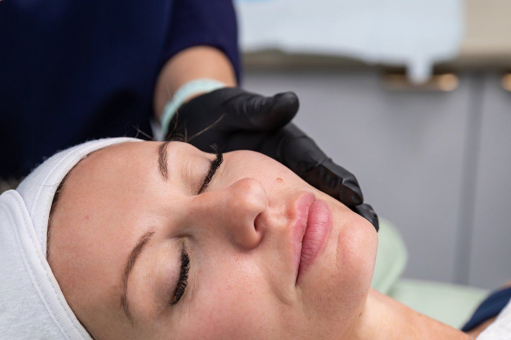
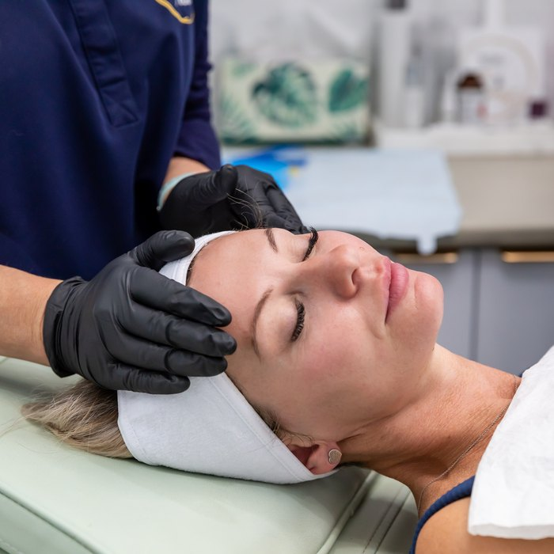

The hormonal shift
It is not your imagination, and it is not your skincare. When oestrogen falls, collagen goes with it - and the routine that worked for twenty years stops working almost overnight.
Take the free skin assessmentOestrogen is what keeps skin thick, hydrated and elastic. As it drops through perimenopause, collagen production drops with it, and the skin loses a meaningful share of its collagen in the years around menopause. That is not a slow fade. For a lot of women it feels like it happened in a single season.
Firmness softens, particularly through the jaw and lower face. Skin gets drier and stays dry no matter what you put on it. Texture turns crepey, especially on the neck and around the eyes. Lines that were only there when you smiled are now there when you are not. And for many women, the hair starts thinning at the same time - a symptom almost nobody warns you about.


Most skincare sits on the surface. This is a structural change happening underneath it. You cannot moisturise your way out of collagen loss, which is why women in perimenopause so often feel like they are spending more and getting less.
This is a skin in transition, not a skin in decline, and it responds well when it is treated for what it is. We would look at rebuilding collagen first - the treatments that stimulate the skin to make its own, rather than the ones that sit on top. Tracey will show you where your skin is losing ground before she recommends a single thing.
What we would use
Which of these is right for you depends entirely on your face. That is what the assessment decides, and it is why Tracey will not quote you before she has looked at you.
Collagen without needles, and without a single day off.
$325 · 30 minutes Collagen & Skin QualityA Korean skin innovation, delivered where it actually works.
$395 · 45 minutes Collagen & Skin QualityRepairs the skin from the inside rather than filling it from the outside.
$375 · 30 minutes MicroneedlingAsks the skin to repair itself, then gives it what it needs to do the job.
$245 · 45 minutes Advanced Nurse TreatmentsFor skin that has gone slack rather than lined.
Consultation required Advanced Nurse TreatmentsPreserves the collagen you have and prompts your cells to make more.
Consultation required Advanced Nurse TreatmentsA lift, without surgery and without a general anaesthetic.
Consultation required Advanced Nurse TreatmentsUses your own blood to tell your skin to repair itself.
Consultation required Advanced Nurse TreatmentsSoftens the lines you have and slows the ones on their way.
Consultation required HairThe perimenopause symptom nobody warns you about.
$375 · 30 minutesEvery treatment is assessed individually. A consultation with a nurse practitioner is required before any procedure, and individual results vary.
The questions people actually ask
No. Collagen-stimulating treatments work at any age - the skin retains the ability to build collagen for as long as you are alive. Starting earlier means preserving more, but starting now is always better than starting later.
Not with Tracey. Her stated bias is towards restraint and natural results, and the treatments most relevant to perimenopausal skin are about skin quality rather than volume - they make skin behave like younger skin rather than change your face.
In most cases yes, but it is exactly the sort of thing to raise at your consultation. Tracey has thirty years of medical nursing behind her and will factor your full history in.
Raise it. It is common, it is rarely mentioned, and there are treatments for it. Nobody should be quietly distressed about their hair because they were too embarrassed to ask.
Free · 60 seconds · No obligation
Take the free skin assessment. Five questions, and you will get back a straight read on what is driving the change and what would actually help - whether or not you ever book with us.